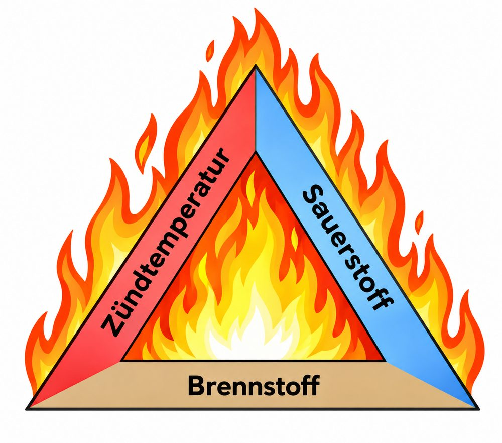
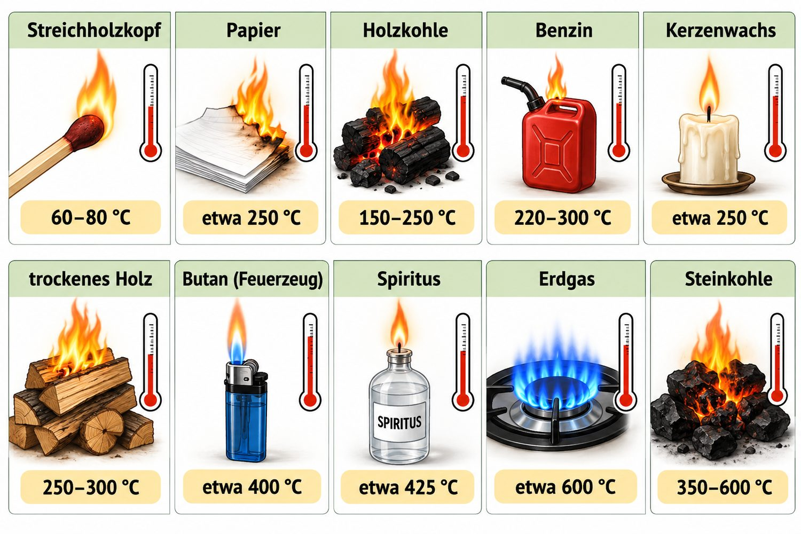
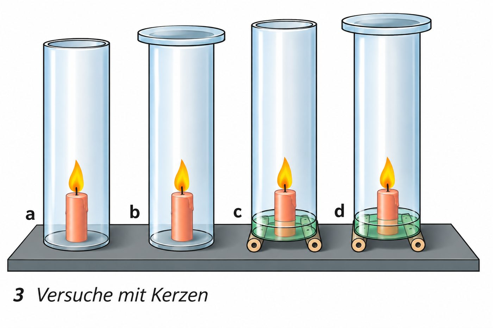

Was brennt – und was nicht?
Nicht jeder Stoff kann brennen.
Material: feuerfeste Unterlage, Zange, , Streichhölzer, verschiedene Gegenstände.
Durchführung: Prüfe, ob sich die Gegenstände mit dem Gasbrenner entzünden lassen: Glasstab, Papierstückchen, Eisennagel, Watte, Holzspan, Kieselsteinchen und ein Stückchen Kerzenwachs.
Wähle einen Gegenstand aus. Die Zange hält ihn in die Flamme. Teste alle sieben.
Tipp: Glühen ist noch kein Brennen. Ein Stoff brennt, wenn er selbst mit einer Flamme weiterbrennt.
Brennbare Stoffe gibt es in allen drei :
🌲 fest: Papier, Pappe, Holz und Kohle
🧴 flüssig: , Benzin, Diesel oder Heizöl
💨 gasförmig: oder die Brennergase . Gase sind besonders leicht brennbar.
🚫 Nicht brennbar sind unter anderem Glas, Keramik, Sand, Wasser und die .
Einen Stoff, der brennt und dabei Wärme liefert, nennt man .
Das Feuerdreieck: Was ein Feuer braucht
Brandbedingungen. Für ein Feuer braucht man:
- einen (Brennstoff),
- eine ausreichend hohe Temperatur (),
- sowie .
Man zeichnet die drei Bedingungen als . Nur wenn alle drei Seiten da sind, brennt das Feuer.

Tippe auf eine Seite des Dreiecks, um sie wegzunehmen. Tippe noch einmal, um sie zurückzuholen.
MERKE
- Für ein Feuer braucht man einen brennbaren Stoff, eine ausreichend hohe Temperatur (Zündtemperatur) sowie genügend Sauerstoff.
- Fehlt eine dieser drei Bedingungen, geht das Feuer aus.
Die Zündtemperatur
Brennbare Stoffe entzünden sich nur dann, wenn sie eine bestimmte Temperatur erreicht haben: die Zündtemperatur.
Jeder Stoff hat eine andere Zündtemperatur. Ein Streichholzkopf entzündet sich schon bei etwa 60–80 °C. Da genügt schon die , wenn man mit dem Streichholzkopf über die Reibfläche der Schachtel streicht.
Wähle einen Stoff und heize ihn mit dem Regler auf. Finde heraus, ab welcher Temperatur er sich entzündet. Entdecke mindestens vier Stoffe.
Schiebe den Regler langsam nach rechts.

Reibungswärme: Streichholz anreiben
Streiche mehrmals schnell hintereinander über die Reibfläche. Jede Bewegung erzeugt Wärme. Erreicht der Kopf seine Zündtemperatur, flammt er auf.
Was brennt bei der Kerze eigentlich?
Lass die Kerze brennen und puste sie dann aus. Halte sofort ein brennendes Streichholz in die weißen Dämpfe.
Die Kerze brennt.
MERKE
- Brennbare Stoffe entzünden sich erst, wenn sie ihre Zündtemperatur erreicht haben.
- Jeder Stoff hat eine andere Zündtemperatur.
Ohne Sauerstoff kein Feuer
Ein Feuer braucht Sauerstoff zum Brennen.
Da der Sauerstoff in der Luft enthalten ist, spricht man im Alltag auch von der Luft als dritter Bedingung für ein Feuer.
Je mehr Luft an den Brennstoff gelangt, desto besser brennt er. Bläst man Luft auf ein Feuer, lodern die Flammen hell auf, weil dadurch die Verbrennung gefördert wird.

Überlege zuerst: Was passiert mit den Kerzen a–d? Tippe unter jedem Rohr deine Vermutung an und starte dann den Versuch.
Ein Feuer wieder anfachen
Das Lagerfeuer glimmt nur noch. Mit einem kannst du Luft hineinblasen. Tippe mehrmals schnell auf den Knopf und beobachte die Flammen.
Mit der Luft gelangt mehr Sauerstoff an den Brennstoff. Die Verbrennung wird gefördert, die Flammen lodern hell auf.
MERKE
- Ein Feuer braucht Sauerstoff. Er ist in der Luft enthalten.
- Je mehr Luft an den Brennstoff gelangt, desto besser brennt er.
Warum Brennstoffe zerkleinert werden
Material: feuerfeste Unterlage, Tiegelzange, Spatel, Kerze, Streichhölzer, Holzklötzchen, Holzspäne, Holzmehl (Sägemehl), Holzkohle.
Durchführung: Versuche, ein Holzklötzchen oder ein größeres Stück Holzkohle anzuzünden. Versuche es dann mit Holzspänen und Holzmehl. Halte auch ein ganz kleines Stück Holzkohle in die Flamme. Vergleiche.
Teste alle fünf Proben in der Kerzenflamme.
Welche Probe lässt sich am leichtesten entzünden?
Zerkleinern vergrößert die Oberfläche
Zerteilungsgrad. Eine Verbrennung ist umso heftiger, je feiner der Brennstoff vorliegt. Holzspäne brennen besser als ein Holzstück. Der noch feinere Holzstaub kann sogar explosionsartig verbrennen.
Der Grund: Der Sauerstoff kann nur an der mit dem Brennstoff reagieren. Zerschneidet man einen Holzwürfel, bleibt die Holzmenge gleich – aber die Oberfläche wird viel größer.
Schiebe den Regler und zerschneide den Würfel (Kantenlänge 4 cm).
MERKE
- Je feiner der Brennstoff vorliegt, desto heftiger verläuft die Verbrennung.
- Fein zerteilte Stoffe haben eine große Oberfläche. Dort kann viel Sauerstoff gleichzeitig angreifen.
Training für die Probe
Löse das Kreuzworträtsel
Tippe in ein Kästchen und schreibe. Tippst du ein Kästchen zweimal an, wechselt die Richtung. Ü bekommt hier ein eigenes Kästchen, wie auf dem Arbeitsblatt. Schwarze Buchstaben sind vorgegeben.
Welches sind die drei Voraussetzungen für ein Feuer?
Tippe zuerst auf einen Begriff und dann auf ein Feld am Dreieck. Die Reihenfolge ist egal. Achtung: Drei Begriffe passen nicht.
Ergänze den Lückentext
Tippe zuerst auf eine Lücke, dann auf das passende Wort.
Brennbar oder nicht? Fest, flüssig oder gasförmig?
Ordne nach der Zündtemperatur – von niedrig nach hoch
So zündest du ein Lagerfeuer an
Kreuze an
Erkläre in eigenen Worten ✨ KI prüft
Schreibe ganze Sätze oder Stichpunkte. Die KI achtet nur auf den Inhalt, nicht auf die Rechtschreibung. Danach kannst du die Musterlösung ansehen.
Feuer-Profi-Check
Wortspeicher
Alle Fachbegriffe dieses Moduls auf einen Blick.
Wie geht es weiter?
Im nächsten Modul geht es um Explosionen: Warum kann sogar Mehl explodieren – und wie schützt man sich?